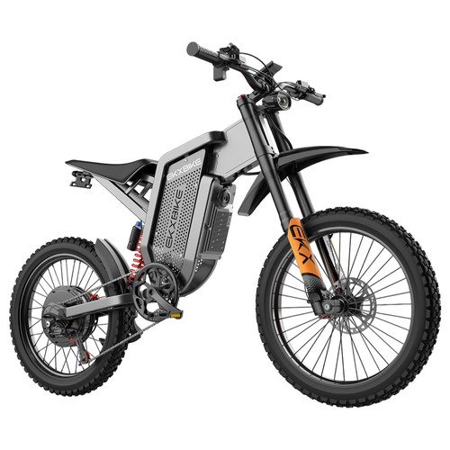
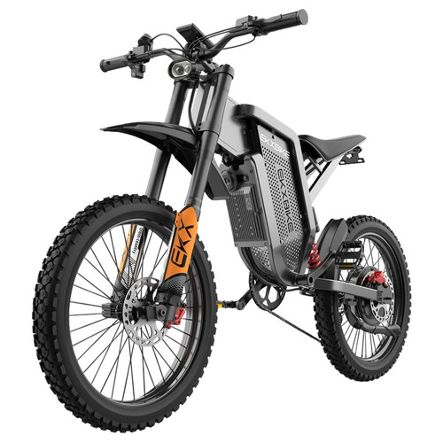
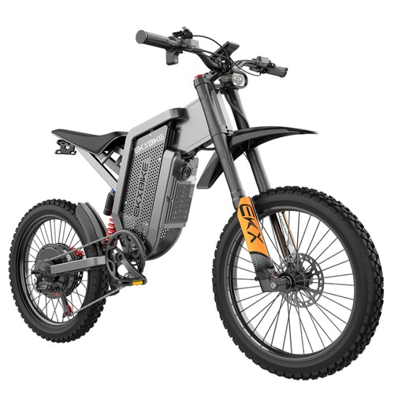
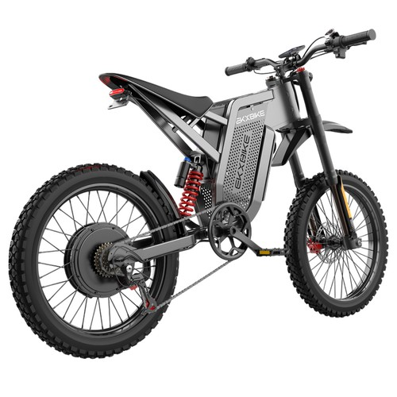

| Quick Bird

High-performance off-road electric bicycles have revolutionized extreme outdoor riding, delivering incredible speed, raw power, and endurance. The EKXBIKE X21 Max stands out as an elite heavyweight contender, engineered to conquer rugged terrains while offering exceptional cruising range and top-tier rider comfort.
Check specs and official prices:
More Details & Buying OptionsHigh-Power 3000W Motor and 60V 30Ah Battery: The EKXBIKE X21 Max off-road electric bike is driven by a robust 3000W brushless high-speed motor, enabling an exhilarating top speed of up to 75 km/h. Powered by a high-capacity 60V 30Ah removable battery, it charges fully in 8-10 hours and delivers an extended cruising range of up to 90 km for long-distance adventures.

Hydraulic Adjustable Shock Absorbers: Designed for serious trail riding, this adult electric bike is equipped with advanced hydraulic adjustable shock absorbers. These dampening systems effectively absorb severe impacts from uneven ground, ensuring a remarkably smooth, stable, and comfortable ride even across the most challenging landscapes.

Precision Hydraulic Braking System: Safety is paramount when handling high speeds. The EKXBIKE X21 Max features high-performance front and rear hydraulic disc brakes that deliver precise, instantaneous stopping power. This reliable braking response ensures fast, controllable deceleration to keep you fully secure in all riding conditions.
